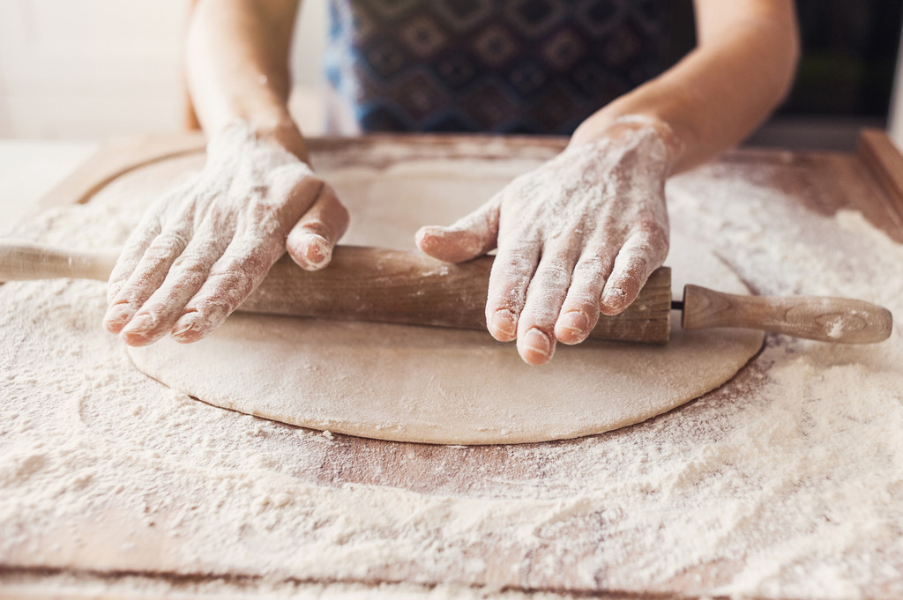
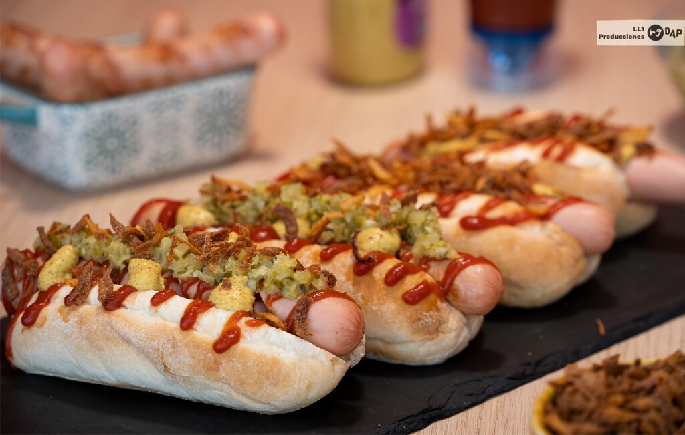
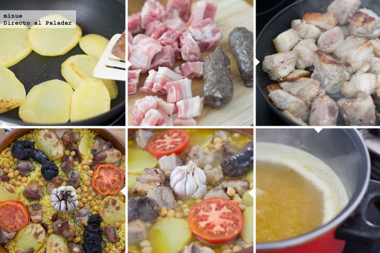
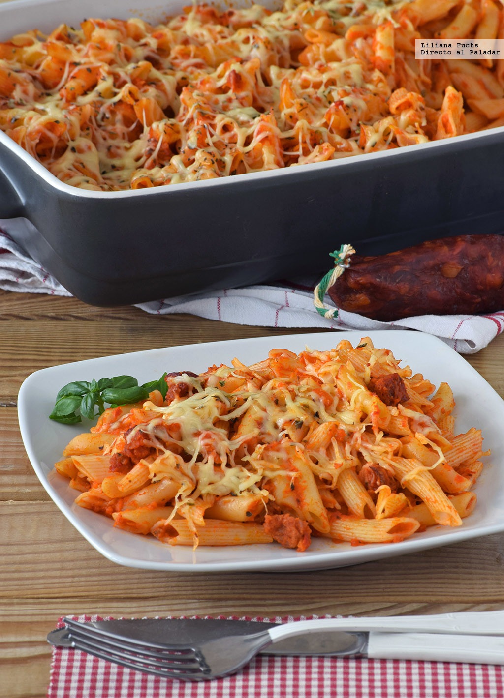
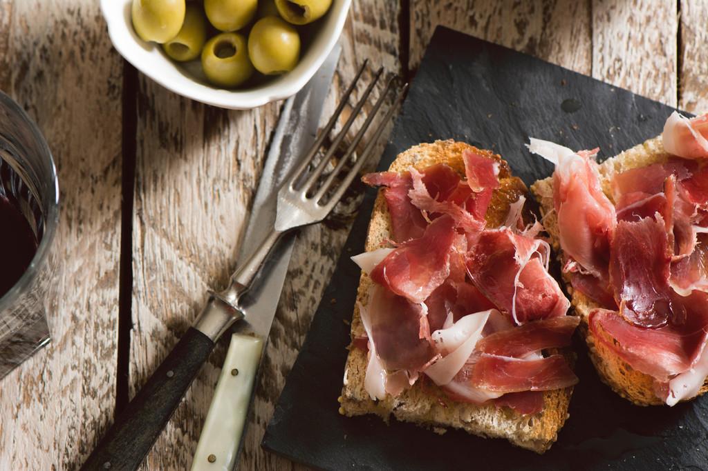
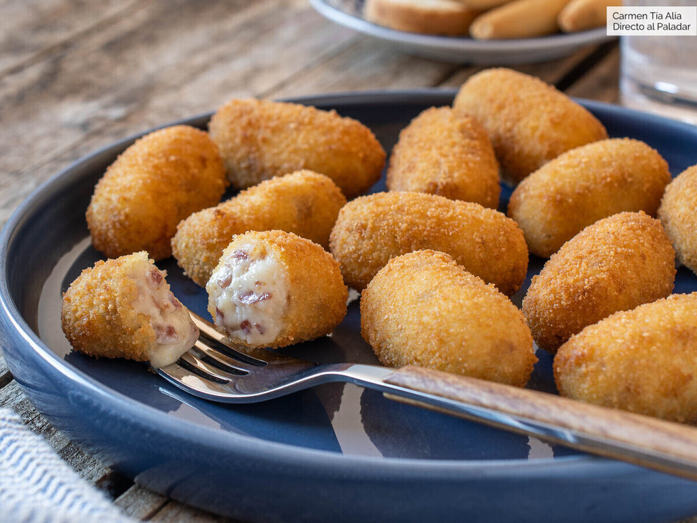

Ejercicio 1
- Videojuegos
- Ver videos
- Leer
- Peliculas
- Series
Ejercicio 2
- Arroz
- Pasta
- Dulce
- Kebab
- Pizza
Ejercicio 3
- PC
- PC, de la palabra en inglés personal computer, que significa ordenador personal.
- PS4
- a PlayStation 4 o PS4 es la cuarta consola de Sony, lanzada en 2013.
- CPU
- Una CPU, o unidad central de procesamiento, es un componente de hardware y la unidad computacional central de un servidor.
- Disco Duro
- Dispositivo de memoria de gran capacidad integrado en la computadora o en otro dispositivo electrónico, o conectado a ellos.
- Nintendo Switch
- es una consola de videojuegos desarrollada por Nintendo. Conocida en el desarrollo por su nombre código «NX»
Ejercicio 4
- Pizza
- Harina de trigo 160 g
- Agua templada 100 ml
- Sal fina cucharadita 1
- Aceite de oliva virgen extra cucharada 1
- Levadura seca de panadería o fresca (un cuarto de paquete) 7 g
- los ingredientes que quieras agregarle a la pizza

pasos
- En un vaso, vierte el agua templada. Disuelve la levadura en el agua
- En un bol ponemos la harina, la sal y, poco a poco, vertemos el agua con la levadura.
- Es más fácil si vamos amasando poco a poco a medida que echamos el agua, hasta verter toda y lograr una masa homogénea.
- Tras esto, coloca la masa en la encimera, cúbrete las manos de harina para que no se pegue y ponte a amasar
- Si la masa se queda pegajosa ve añadiendo más harina
- Ésta tiene que quedar lo suficientemente seca para que no se pegue en la mesa o las manos, pero no demasiado, porque si no puede romperse en el horno
- Una vez que la masa esté homogénea, elástica, pero no pegajosa, incorpora el aceite, y vuelve a amasar hasta que se integre por completo.
- Haz una bola y realiza dos incisiones para que pueda crecer bien. Devúelvela al bol, tápalo con un paño humedo y dejalo que repose a temperatura ambiente.
- Despues de dejarla reposar durante 24h la extendemos y le ponemos los ingredientes que hayas seleccionado.
- Hot Dog
- Salchichas Frankfurt 1
- Panecillos para perrito 1
- Pepinillo agridulce 1/2
- Cebolla trozo pequeño 1
- Mostaza de Dijon cucharada 1/2
- Miel cucharada 1/2
- Cebolla frita crujiente
- Kétchup
- Mostaza amarilla

pasos
- Cortamos en ángulo las salchichas sin llegar al final primero por un lado y después por el contrario para que al pasar las salchichas por la sartén o la parrilla entre mejor el calor.
- Calentar ligeramente los panes de perrito y cortamos la cebolla y los pepinillos muy muy pequeños y mezclamos en un bol con el encurtido, la mostaza y la miel para tener el aderezo (relish) del perrito.
- Montamos los perritos con la salchicha, las salsas de mostaza y ketchup, el relish y la cebolla frita crujiente.
- Arroz al Horno
- Arroz bomba 4 cacitos
- Caldo de cocido 8 cacitos
- Panceta fresnca lonchada 2
- Morcilla de cebolla 2
- Costillas de cerdo troceadas 250 g
- Tomate 1
- Patata 1
- Garbanzos
- Cabeza de ajos 1

pasos
- Empezamos poniendo el caldo a calentar
- Lavamos, pelamos y cortamos en rodajas la patata, luego la doramos brevemente en una sartén y reservamos.
- Si tenemos fuego a gas, colocamos la cazuela de barro sobre el fuego y ponemos a dorar la carne y la panceta troceada con un poco de aceite
- Antes de añadir el caldo, ajustamos de sal (hay quien añade azafrán o colorante para que coja color)
- Distribuimos las rodajas de patata, colocamos una cabeza de ajo en el centro y ponemos un tomate partido por la mitad
- También hay quien rehoga el tomate con un poco de pimentón o de tomate frito
- Por último vertemos el caldo y horneamos durante 19 minutos con el horno a 250 ºC.
- Recordad que la proporción de caldo es exactamente dos a uno. Es decir, dos partes de caldo por una de arroz.
- Macarrones 
- Paella Valenciana

- Jamón Serrano 
- Croqueta 